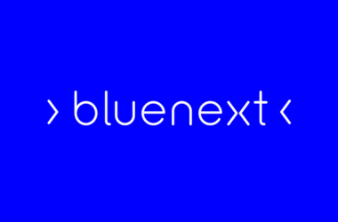

Report pre/post corso AI – Analisi comparativa survey
Bluenext & Datapizza · luglio 2025

Bluenext & Datapizza · luglio 2025

scale_summary.csv e nella dashboard Plotly).Il riepilogo completo dei range min/max per ogni variabile è presente in scale_summary.csv e nella dashboard Plotly.
dashboard_table.csv – variazioni per partecipante.scale_summary.csv – range min/max per ciascuna voce.feedback_dashboard.py – generatore della dashboard Plotly.report_pre_post_AI.md – versione testuale del presente documento.Tutti i file sono disponibili nella cartella di progetto Bluenext.